The Modern STAC Software Ecosystem
Pete Gadomski, Development Seed, STAC PSC
What the STAC?
Open, community specification and ecosystem for geospatial search and discovery

A brief STAC history
---
config:
theme: neutral
look: handdrawn
---
timeline
2017 : Initial commit to what became the stac-spec repository
: Sprint 1 (Boulder)
: v0.1.0
2018 : Name changed to STAC
: Sprints 2 (Ft. Collins) and 3 (Menlo Park)
: v0.4.0 to v0.6.0
2019 : Sprints 4 and 5 (Arlington)
: v0.7.0 to v0.8.0
2020 : Sprint 6 (Virtual)
: v0.9.0
2021 : v1.0.0
2023 : Sprint 7 (Philadelphia)
: API v1.0.0
2024 : v1.1.0
2025 : Sprint 8 (Italy)
: OGC Community Standard
2026 : Workshop 1 (Japan)
STAC entities
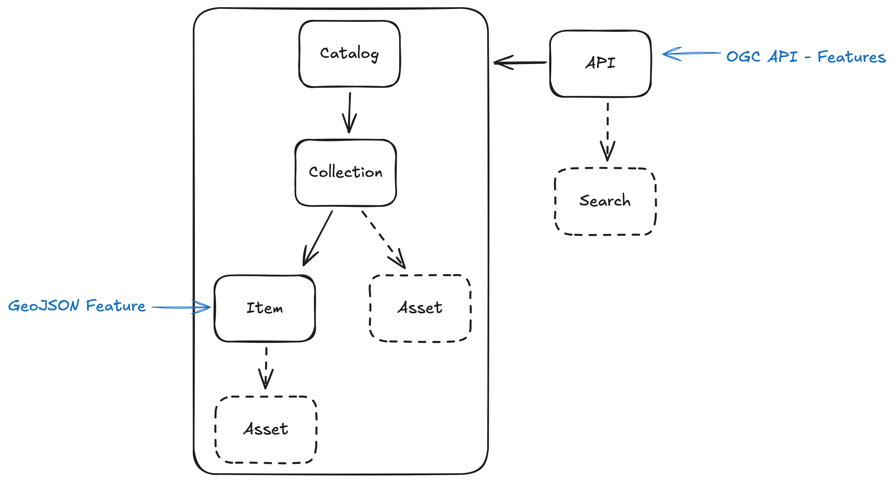
Batteries included
...we knew the path to that goal was through a healthy ecosystem of software. From day one, the focus was on creating catalogs and tools that were not just compliant, but genuinely useful. We had a working server at the end of the first sprint.
— Matt Hanson
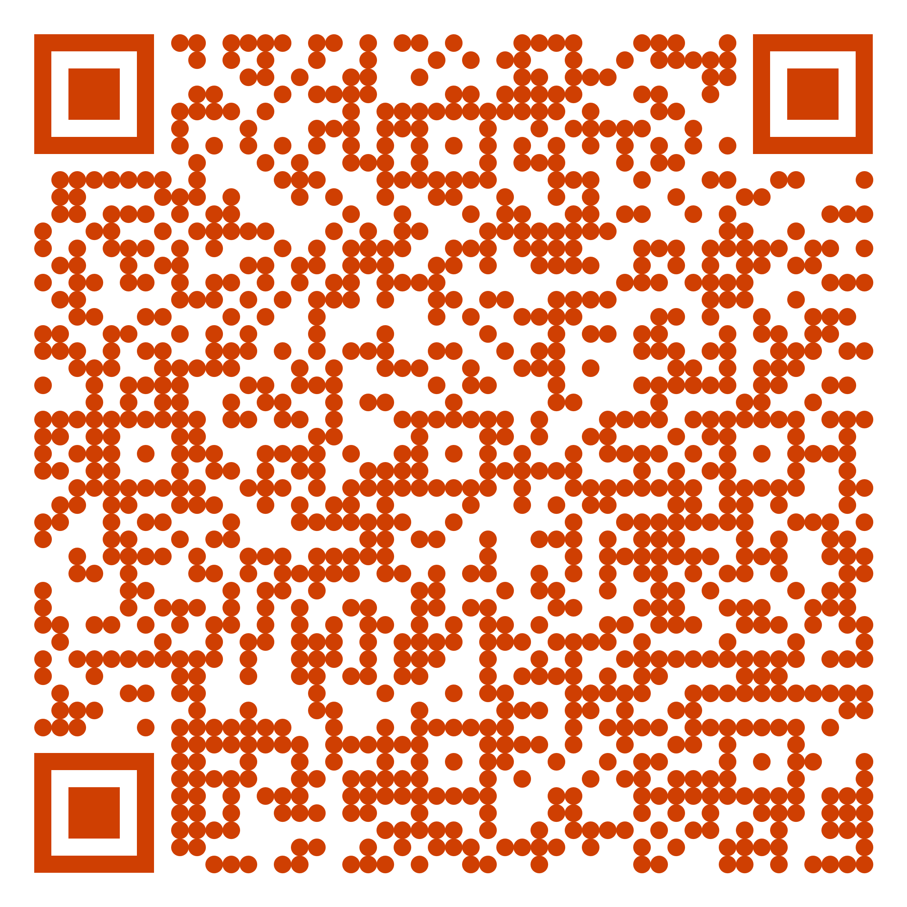
Themes
- After initial expansion, it's time for cleanup
- Distill and talk about lessons learned
- With maturity comes security (requirements)
The Modern STAC Software Ecosystem
STAC actors

- 👩🍳 Data providers produce geospatial data and index those data with STAC
- 💁 Developers build and maintain infrastructure to serve STAC to the world
- 😋 Data users use STAC to find, visualize, and use geospatial data


👩🍳 Data providers
produce geospatial data and index those data with STAC
PySTAC
python -m pip install pystac
root_catalog = Catalog.from_file("./example-catalog/catalog.json")
print(f"ID: {root_catalog.id}")
print(f"Title: {root_catalog.title or 'N/A'}")
print(f"Description: {root_catalog.description or 'N/A'}")

PySTAC v1.15
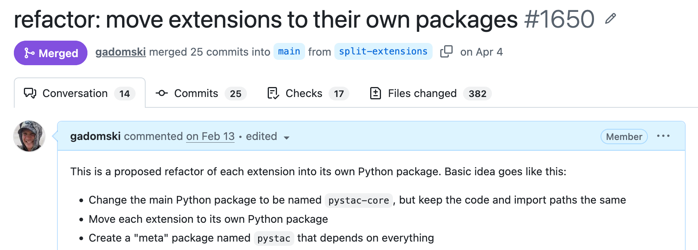
dependencies = [
"pystac >= 1.15",
"pystac-ext-projection == 2.0.1",
"pystac-ext-my-custom-extension"
]
PySTAC v2 (WIP)

stactools
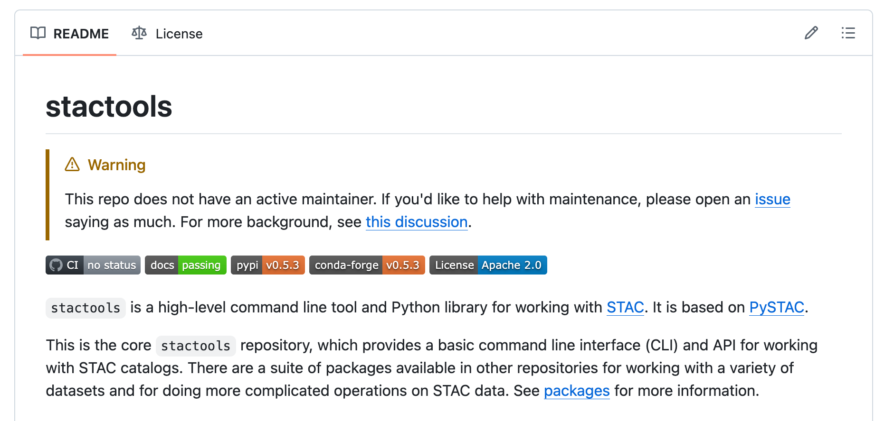
stactools STAC tools

GeoZarr and STAC
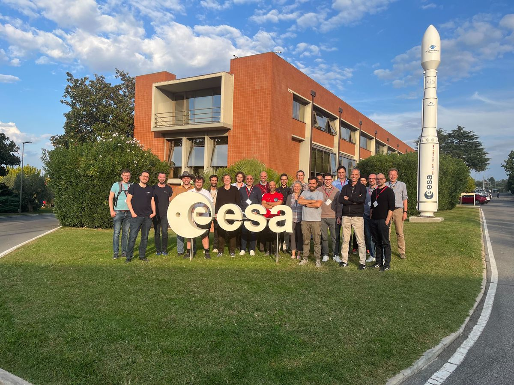
Sprint in Frascati, Italy, October 14-16, 2025
State of play & best practices
GeoZarr conventions explicitly borrow concepts from STAC extensions
Zarr groups and arrays can be represented by 2 STAC object types depending on the use case.
- A STAC Item is appropriate when the Zarr group represents a particular location in space and/or time
- A STAC Collection is appropriate when the Zarr group represents multiple locations in space and/or time
https://github.com/radiantearth/stac-best-practices/blob/main/best-practices-zarr.md
AI-ready STAC
Good news: good STAC is inherently AI-ready!
Bad news: not all STAC is good STAC
Easy wins to make the robots happy
- Make collections public, even if your items and assets aren't
- Meaningful descriptions
- Valid license
- Provide summaries
- Lots of links
- Anything "interesting"
Your collections are your "home pages"
Make them rich and informative
💁 Developers
build and maintain infrastructure to serve STAC to the world
Authorization
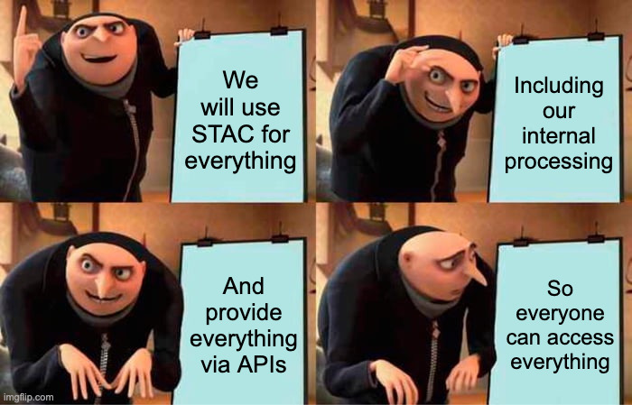
stac-auth-proxy
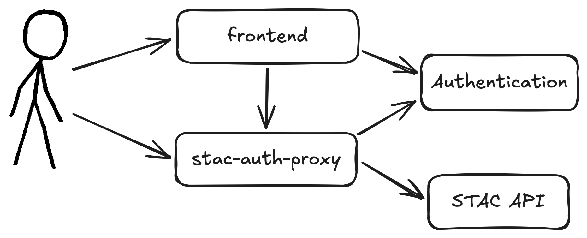
Route-level authorization
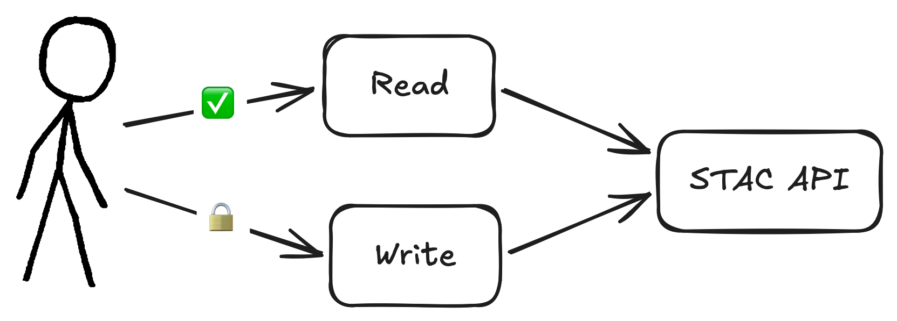
# Set default policy to public
DEFAULT_PUBLIC=true
# Require specific scopes for write operations
PRIVATE_ENDPOINTS='{
"^/collections$": [["POST", "collection:create"]],
"^/collections/([^/]+)$": [["PUT", "collection:update"], ["PATCH", "collection:update"], ["DELETE", "collection:delete"]],
"^/collections/([^/]+)/items$": [["POST", "item:create"]],
"^/collections/([^/]+)/items/([^/]+)$": [["PUT", "item:update"], ["PATCH", "item:update"], ["DELETE", "item:delete"]],
"^/collections/([^/]+)/bulk_items$": [["POST", "item:create"]]
}'
Record-level authorization
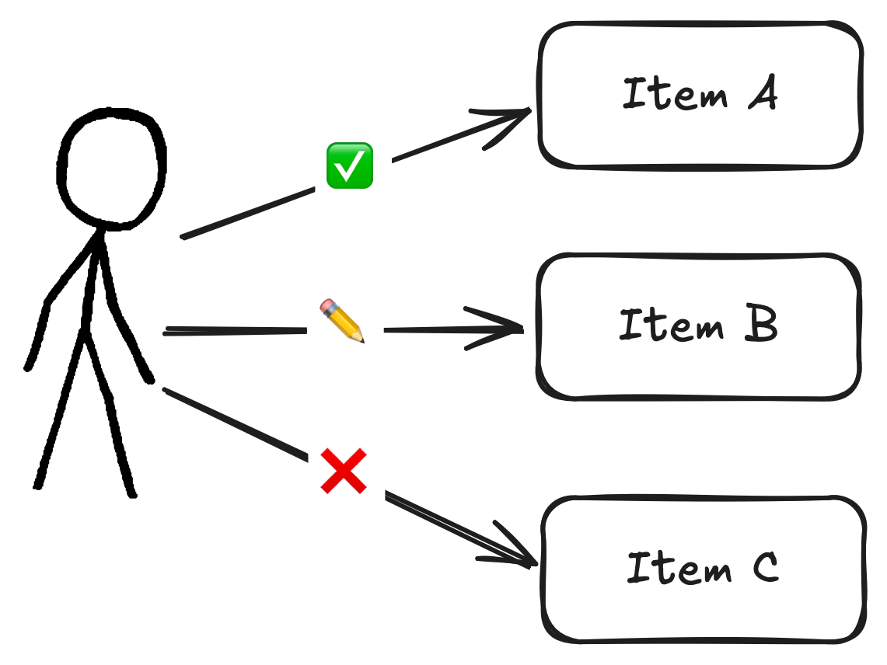
# Basic configuration
ITEMS_FILTER_CLS=stac_auth_proxy.filters:Template
ITEMS_FILTER_ARGS=["collection IN ('public')"]
# With keyword arguments
ITEMS_FILTER_CLS=stac_auth_proxy.filters:Opa
ITEMS_FILTER_ARGS=["http://opa:8181", "stac/items/allow"]
ITEMS_FILTER_KWARGS={"cache_ttl": 30.0}
stac-geoparquet
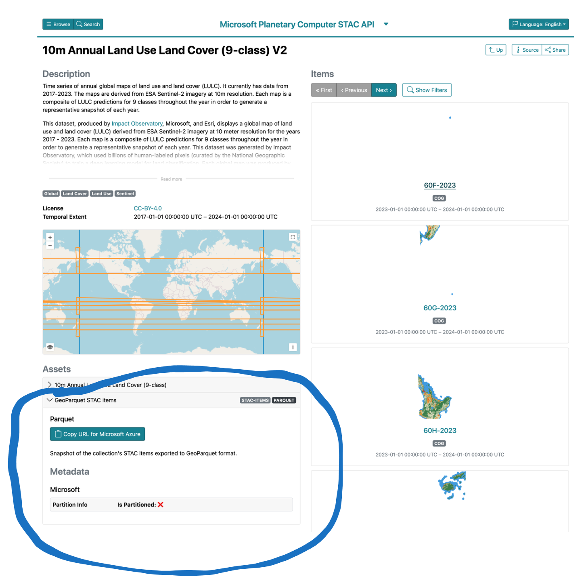
stac-geoparquet complements APIs
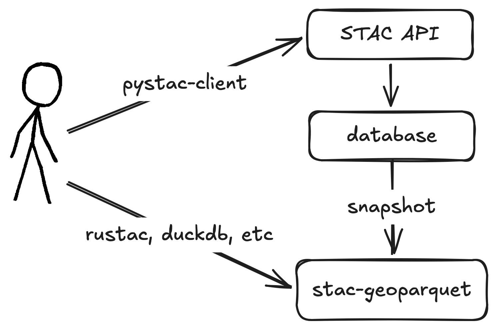
stac-geoparquet best practices
Work in progress
- Sort on space and time
- Prefix item ids with search key
- Use (hive) partitioning
https://github.com/radiantearth/stac-geoparquet-spec/blob/main/docs/best-practices.md
Cloud-optimized stac-geoparquet
cosgp create source destination
aws s3 sync destination s3://my-bucket/destination # or whatever
| Benchmark | Original (s) | Optimized (s) | Speedup |
|---|---|---|---|
| Count in bbox | 72 | 1.5 | 49 |
| Geometry intersects | 11 | 1.6 | 9 |
| Most recent | 28 | 2.3 | 12 |
| ID | 26 | 2.2 | 12 |
https://github.com/developmentseed/cloud-optimized-stac-geoparquet
Multi-tenancy and federation
- Collection search
- Hierarchical APIs
Federated collection search
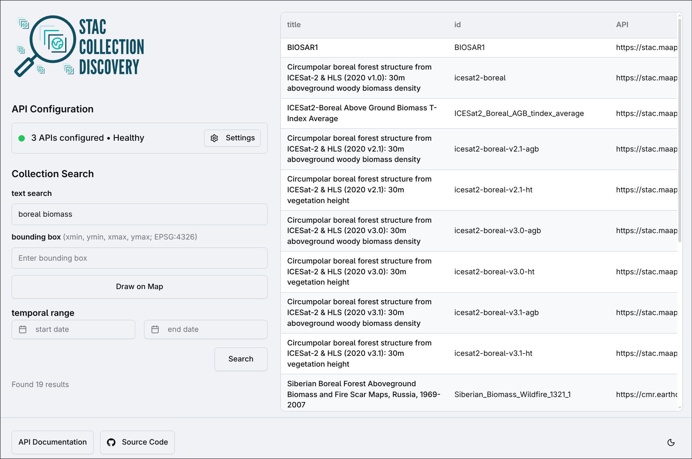
Multi-tenant catalogs
Capability gap-filling
- Filter (CQL2) support in stac-server (Node)
😋 Data users
use STAC to find, visualize, and use geospatial data
stac-browser
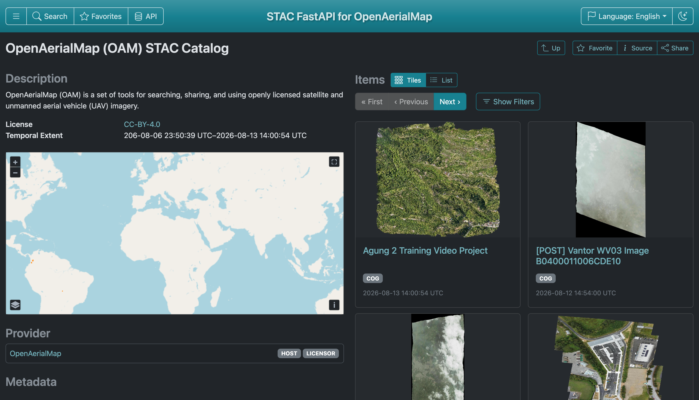

stac-browser v5.1 🥳
- GeoZarr visualization
- Better search
- Code snippets
- Favorites
- Editing via transactions extension
- And more...
stac-map


rustac for stac-geoparquet
python -m pip install rustac
for item in await rustac.search("s3://bucket/collection/*.parquet"):
print(f"- {item['id']}")
Snapshots for reproducibility
await rustac.search_to(
"items.parquet",
"https://stac.eoapi.dev",
collections=["MAXAR_yellowstone_flooding22"],
)
for item in await rustac.search("items.parquet"):
print(f"- {item['id']}")
Where will we be next year?
- PySTAC v2
- Mature STAC+GeoZarr examples and tooling
- stac-geoparquet transactions
- Embeddings as assets, formalize semantic item search
- API extension for "sub-item search" (e.g. feature detection) 🥴